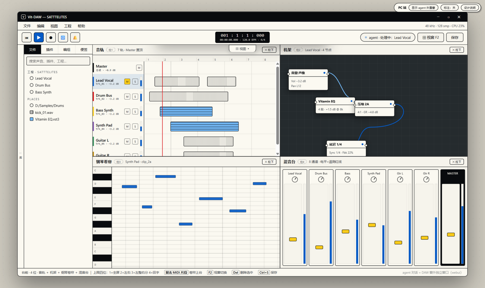
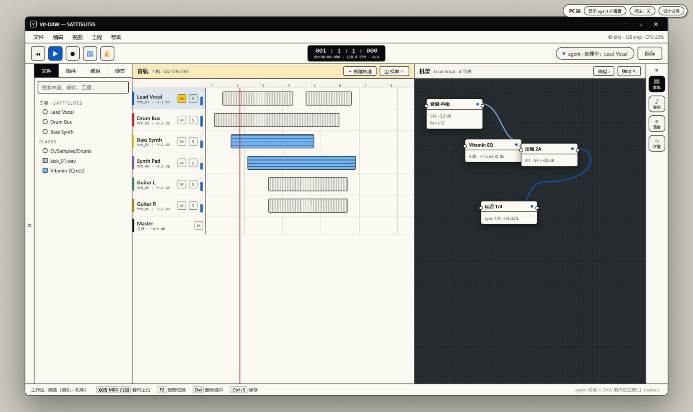
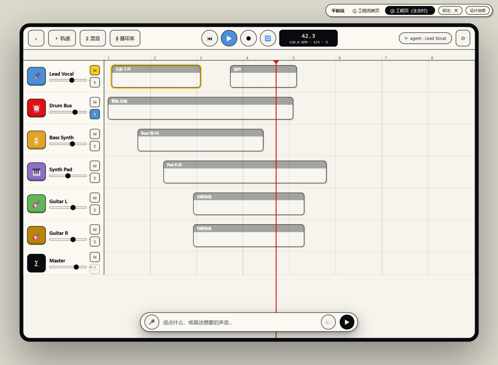
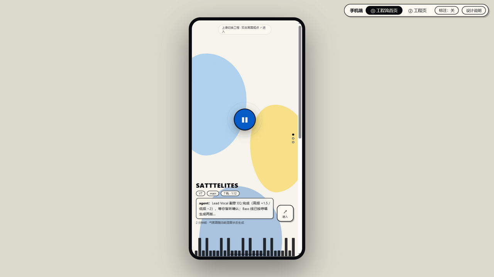
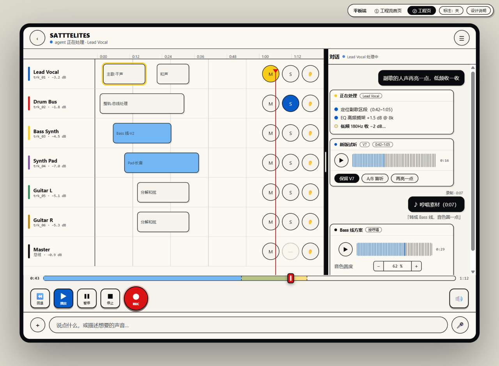
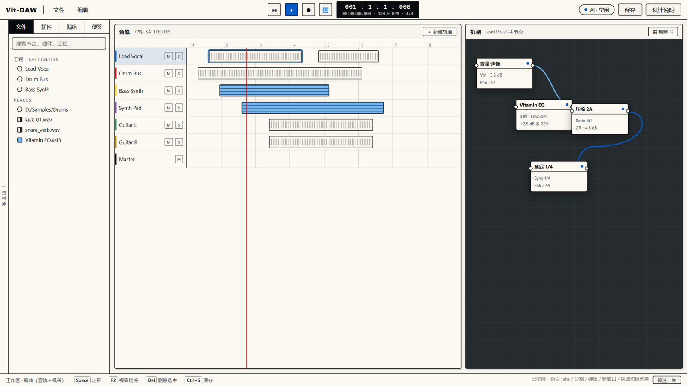
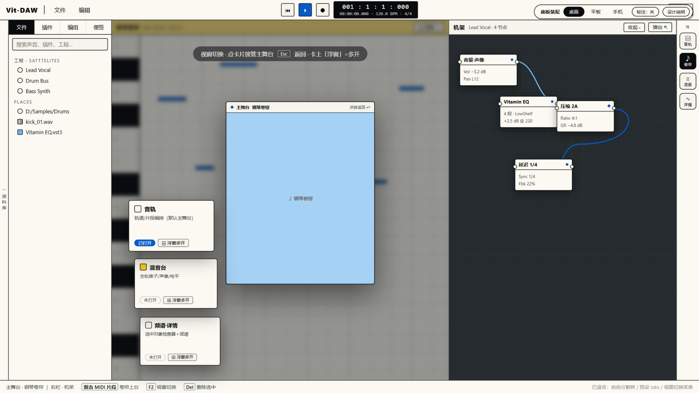
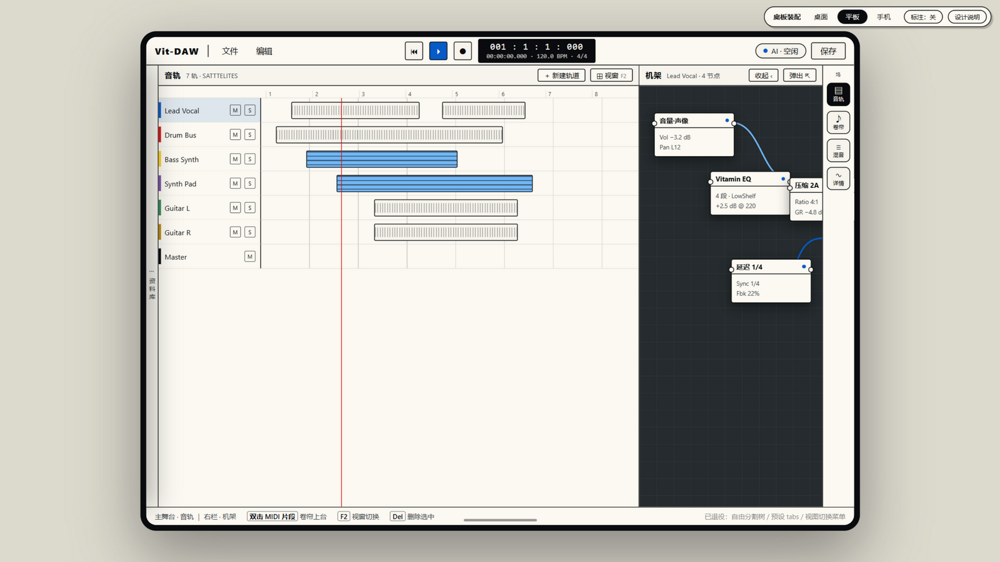

四位台前自动铺排（1全屏/2左右/3左整右分/4田字，满四挤出最久）+ 左列陈列调度 + 抽屉坞（收起bug已修）+ Master 置顶 + 外置 agent 窗。
第十一轮扩展
切换态点卡换主舞台版——被第十轮裁定取代（太繁琐缺逻辑→双位积木）。
历史方向
仿库乐队/音悦家做像 + 唯一更新点=底部浮动输入框（浮于界面上方），对话流自输入框向上展开。细节后续补。
已通过
工程流首页（预览⟷列表）+ 工程页（对话流+磁带机走带+红指针走带线+浮动轨道歌单+🔊竖推子+底部输入框）。
已定稿
照抄手机端不变量的平板稿——被裁定否决，由 V7 取代。
废弃归档
切换器换右栏（已被裁定修正：切换对象改为主舞台）——切换态机制存活于 V2/V3。
历史方向
双击片段=卷帘——被 V2 吸收为「双击 MIDI 上台」。
历史方向
浮卡/吸附机制被 V2 完整吸收（↗ 真窗口、⚓ 吸附）。
历史方向